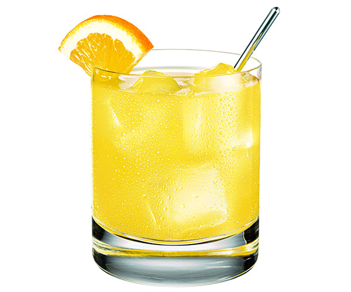

Screwdriver

Big Dan's Favorite!
This is the go to drink for any true Wisconsin grown person!
Ingredients
1 teaspoon simple syrup
- 2 dashes Angostura Bitters
- Sticky note sized orange peel including pith
- 2 ounces brandy
- 1 maraschino cherry
How to make!
- Combine simple syrup and bitters in an old fashioned glass
- Fill glass halfway with ice, then stir about a dozen times
- Add enough ice to fill the glass
- Squeeze orange peel over glass to extract oils, add peel to glass, then add the brandy
- Stir drink, garnish with cherry
- Enjoy!
Return to main page